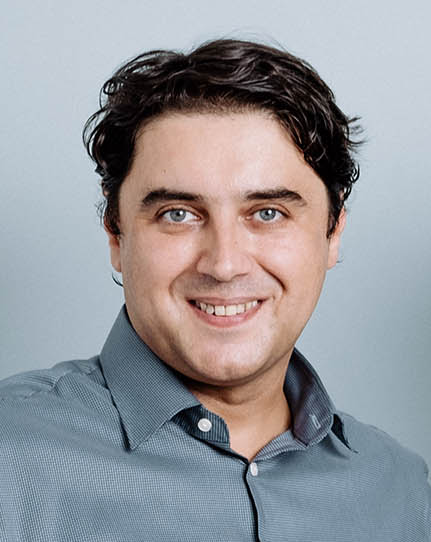

Executive & Product Technology Consulting
I help executives and engineering organizations build products that scale.
20+ years as CTO, CPO, and CEO across Industrial IoT, IoT, and AI ventures — from early-stage products to enterprise-grade, production-critical deployment. Now consulting on fractional CTO leadership, product strategy, and AI-native engineering.

About
Executive technology leader with 20+ years across hardware, embedded systems, software, and cloud — including a decade in C-level roles building and scaling Industrial IoT, IoT, blockchain, and AI ventures for military, automotive, manufacturing, medical, and consumer markets.
Most recently CTO at Cybus GmbH, where I scaled an Industrial IoT platform from early-stage to enterprise-grade, production-critical deployment across large, multi-site environments — while sustaining 0% voluntary team turnover across the entire engineering organization. Before that, six years as CTO and Executive Board Member at Next Big Thing AG, an IoT venture studio, where I owned technology strategy across a portfolio of ventures spanning MedTech, energy management, blockchain, secure hardware, and industrial asset management.
I'm currently working intensively with LLMs and agentic AI, with a hands-on track record of using AI to accelerate delivery, tooling, and productivity within engineering teams — and I bring that same practical, outcome-driven approach to every consulting engagement.
What I Consult On
Fractional & Interim CTO
Hands-on technology leadership for companies that need executive-level engineering direction without a full-time hire — architecture ownership, technical due diligence, and board-level advisory.
Product Strategy & Roadmapping
Outcome-driven roadmaps, continuous discovery, and AI-native product strategy — translating market and customer requirements into shipped product decisions.
Engineering Organization Scaling
Building and scaling engineering teams from early-stage to 30+ people — team structures, hiring, process, and culture that holds up under enterprise-scale pressure.
IoT, IIoT & Embedded Systems
Hardware and software co-design, industrial protocols (OPC-UA, Modbus, MQTT, BACnet, S7), and production-critical system architecture for industrial and embedded products.
AI & Agentic Systems Strategy
Practical, hands-on guidance for adopting LLMs and agentic AI inside engineering organizations — from tooling and delivery acceleration to AI-native product architecture.
Security & Compliance
Security posture and process aligned to ISO 27001 and TISAX, built into engineering practice rather than bolted on afterward.
Track Record
Get in Touch
Open to fractional CTO engagements, product and technology advisory, and speaking on IoT, engineering leadership, and applied AI.